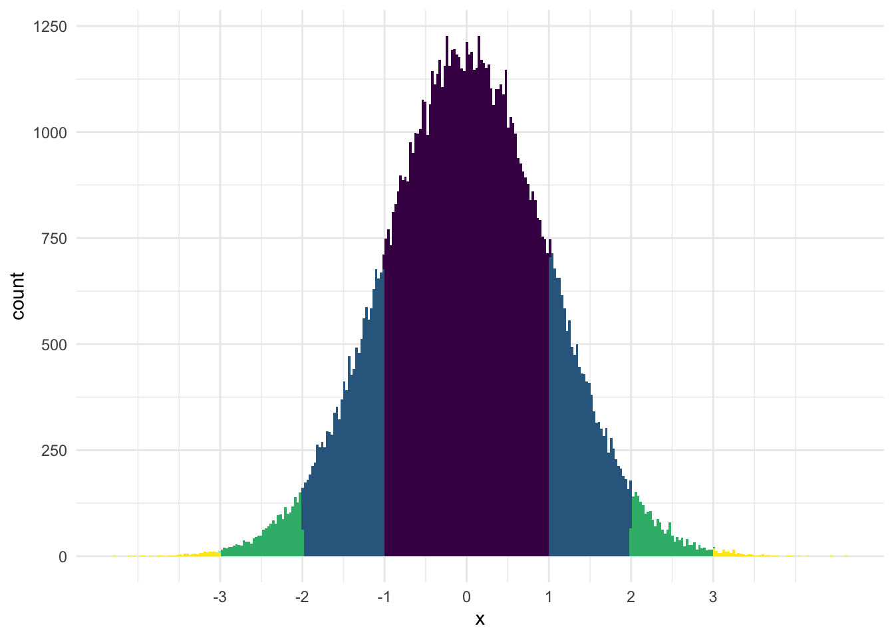
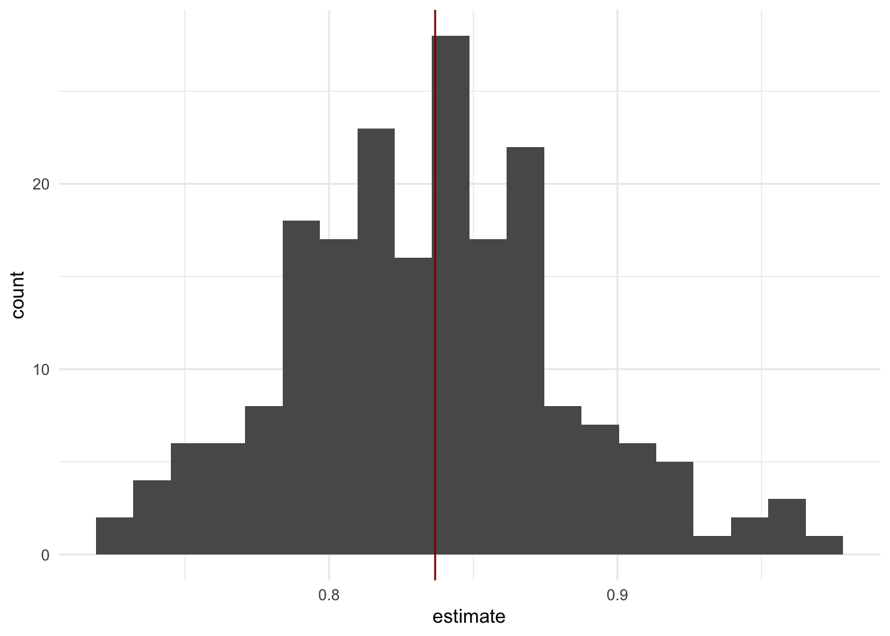
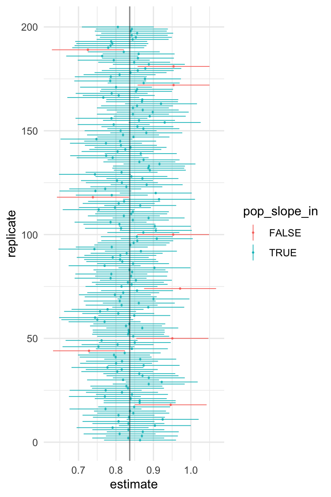
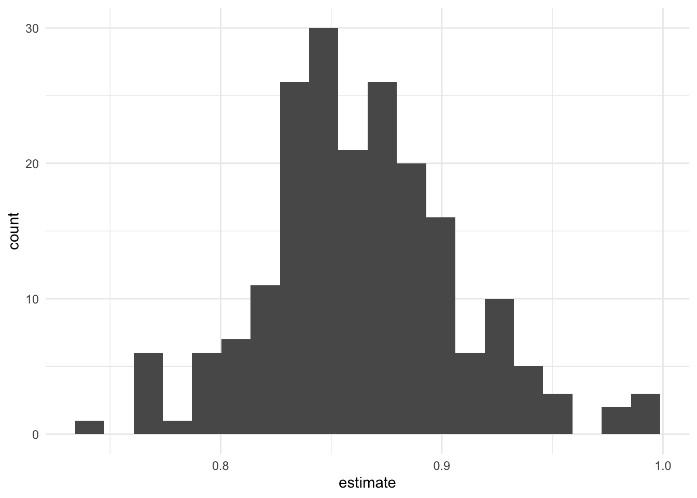

library(tidyverse) #for plotting and summarizing
library(ggridges) #for ridge plots
library(ggmosaic) #NEW! for mosaic plots
library(moderndive) #for nice model output
library(broom) #for nice model output
library(infer) #for making inferences about models
theme_set(theme_minimal()) #changes the theme of ggplots to theme_minimal, my personal favoriteGOAL:
By the end of these notes and activities, you should be able to perform the following tasks.
During the past week, we have been learning about sampling and bootstrap distributions which help us understand how statistics vary from sample to sample. Today, we will learn how those can be used to help us construct confidence intervals.
We’ve all seen normally distributed data. It turns out “the” normal distribution is actually a family of distributions that depends on the mean and standard deviation of the data. The visual below is a “standard” normal distribution, which means it has mean 0 and standard deviation of 1. Here is a plot of a standard normal distribution.

Facts about Normal Distributions:
We’ll use some of this information as we talk about confidence intervals and inference.
Recall the sampling distribution of the slope, \(\hat{\beta}_1\), from last time:
kc_house_data <-
house_prices %>%
filter(bedrooms<=5, bedrooms>0) %>%
mutate(grade_CAT = fct_relevel(ifelse(grade %in% "1":"7", "Low",
ifelse(grade == "8", "Medium","High")),
"Low", "Medium", "High"),
age=2015-yr_built)set.seed(1113)
slopes_200_times <-
rep_sample_n(kc_house_data,
size = 500,
reps = 200,
replace = FALSE) %>%
group_by(replicate) %>%
do(lm(log(price) ~ log(sqft_living), data=.) %>% tidy()) %>%
ungroup() %>%
filter(term == "log(sqft_living)")
slopes_200_times %>%
ggplot(aes(x = estimate)) +
geom_histogram(bins = 20) +
geom_vline(xintercept = 0.836771, color = "darkred")
YOUR TURN!
\[ (\hat{\beta}_1 - 2SE, \hat{\beta}_1 + 2SE) \]
Let’s actually illustrate what I asked you to do in the second question above.
You will NOT have to write code like this on your own, but I will explain it for those who are interested.
First, I find and store the SE of the estimated slopes.
SE <- sd(slopes_200_times %>% pull(estimate))
SE## [1] 0.04802503Next, find the ends of the intervals. And, create a variable that checks to see if the interval contains the population slope, 0.836771, or not. Scroll through the output. Do any intervals not contain the true slope?
conf_int_200_times <-
slopes_200_times %>%
select(replicate, estimate) %>%
mutate(lower = estimate - 2*SE,
upper = estimate + 2*SE,
pop_slope = 0.836771,
pop_slope_in = pop_slope < upper & pop_slope > lower)
conf_int_200_timesNow, let’s visualize this in a plot.
conf_int_200_times %>%
ggplot() +
geom_linerange(aes(x=replicate,
ymin=lower, ymax=upper,
color=pop_slope_in),
size=.3) +
geom_point(aes(x=replicate, y=estimate,
color=pop_slope_in), size=.3) +
geom_hline(yintercept = 0.836771, alpha=.5) +
coord_flip() 
So, what proportion of intervals contain the true slope?
This illustrates the meaning of a the 95% confidence interval! A 95% confidence interval is an interval in which 95% of the intervals constructed this way (in repeated sampling of the population) contain the true parameter. So, the 95% “confidence” has to do with confidence in the method.
I think the tweet below is a great illustration for how to think of confidence intervals.
But, the “true” value is the part they should view as fixed.
— Ellie Murray (@EpiEllie) December 14, 2018
Instead, I propose explaining precision, accuracy, and confidence intervals with ring toss.
The “truth” is in a fixed place, and it’s the confidence interval ring that may or may not land where you want it to. 3/4 pic.twitter.com/Yca5UXorc4
Unfortunately, we don’t know if we have one that does or does not contain the true parameter. So, we really use these intervals to give a sense of the precision of our estimate. If the interval is really wide, it’s not very precise. If it’s narrow, it’s more precise.
Think of the confidence interval as an interval estimate of our slope. So, rather than having just one number as our estimate, we now have a range of plausible values.
“There is a 95% chance (or 95% probability) that this confidence interval contains the true slope.”
If I take another sample and fit a model, “There is a 95% chance the slope will be in this confidence interval.”
YOUR TURN!
Assume you have a sample of data. You fit a model to the data and construct a 95% confidence interval for the slope. Think of it as one of the lines from the picture above. Explain why the statements above are incorrect.
In the simulation above I computed the SE of the estimated coefficient using the sampling distribution. But we know that we will only have one sample, so we will have to estimate the standard error from our one sample.
How can we do this?
Let’s look at a model from one of our samples of data, samp1.
set.seed(327)
samp1 <- kc_house_data %>%
sample_n(size=500)
lm.samp1 <- lm(log(price) ~ log(sqft_living),
data=samp1)
tidy(lm.samp1) %>%
select(term, estimate)Let’s construct the bootstrap distribution of the estimated coefficient of log(sqft_living).
set.seed(1113)
boot_model_200_times <-
rep_sample_n(samp1,
size = 500,
reps = 200,
replace = TRUE) %>%
group_by(replicate) %>%
do(lm(log(price) ~ log(sqft_living), data=.) %>% tidy()) %>%
ungroup() %>%
filter(term == "log(sqft_living)")
boot_model_200_times %>%
ggplot(aes(x = estimate)) +
geom_histogram(bins = 20)
YOUR TURN!
eval=FALSE when finished)boot_model_200_times %>%
summarize(___ = ___)How does this SE compare to the SE you found from the sampling distribution?
Construct a 95% confidence interval using the SE you found from the boostrap distribution. (Remove eval=FALSE when finished)
boot_model_200_times %>%
summarize(SE = ___,
lowerCI = ___,
upperCI = ___)How do you interpret this confidence interval?
We can also find the confidence interval as the middle 95% of the bootstrap distribution. Try computing it this way. How does it compare to the method using the standard error? (Remove eval=FALSE when finished)
boot_model_200_times %>%
summarize(lowerCI = quantile(estimate, probs = ___),
upperCI = quantile(estimate, probs = ___))Let’s look at the full regression table from the model we built using samp1. We can add a confidence interval by including conf.int = TRUE. I also added it “by hand”. These are slightly different partially because we are rounding when we use the multiplier of 2. Mulitplying by 1.96 would be closer.
tidy(lm.samp1, conf.int = TRUE) %>%
mutate(lowerCI = estimate - 2*std.error,
upperCI = estimate + 2*std.error)Notice that there is a variable in this output called … std.error! How does that standard error compare to the standard error you computed from the bootstrap distribution?
This standard error is computed using some statistical theory (for reference, see Heggeseth/Myint). That is used in constructing the confidence interval.
YOUR TURN! (Extra challenge)
I would like to construct a confidence interval for the average price of homes with 2000 sqft of living. Describe in words how you could use the bootstrap techniqe to help answer that question. Then, code it!